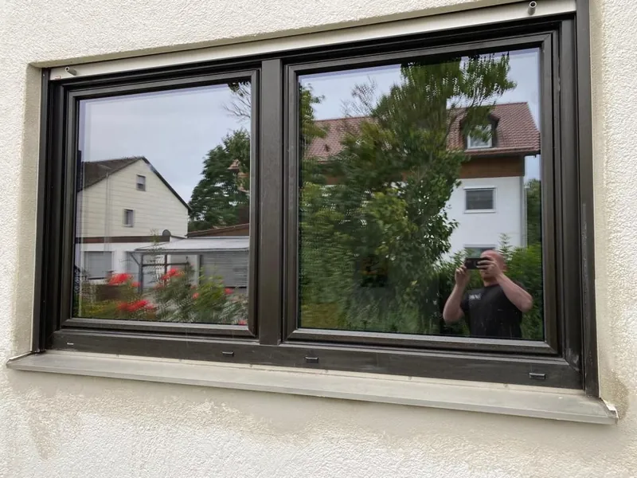
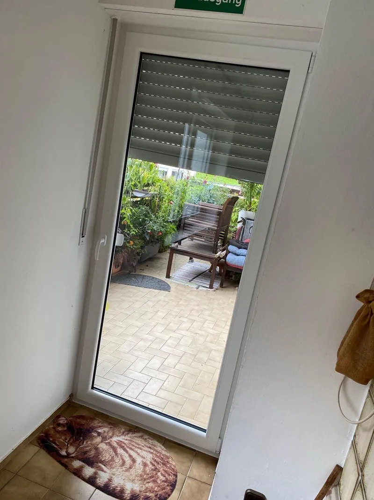
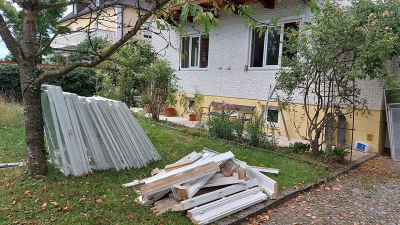
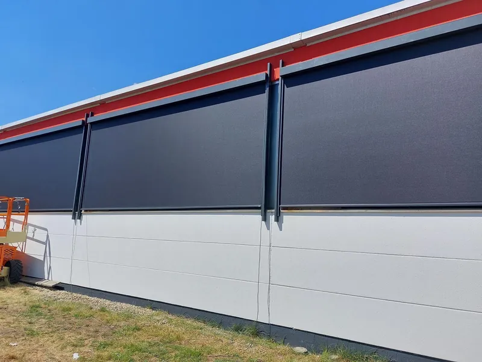
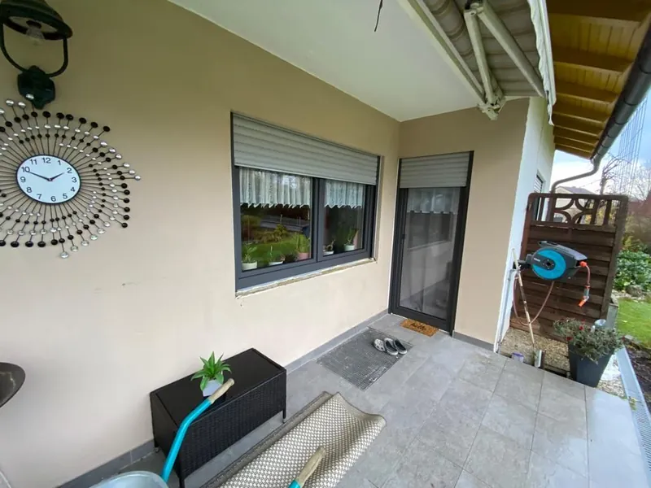
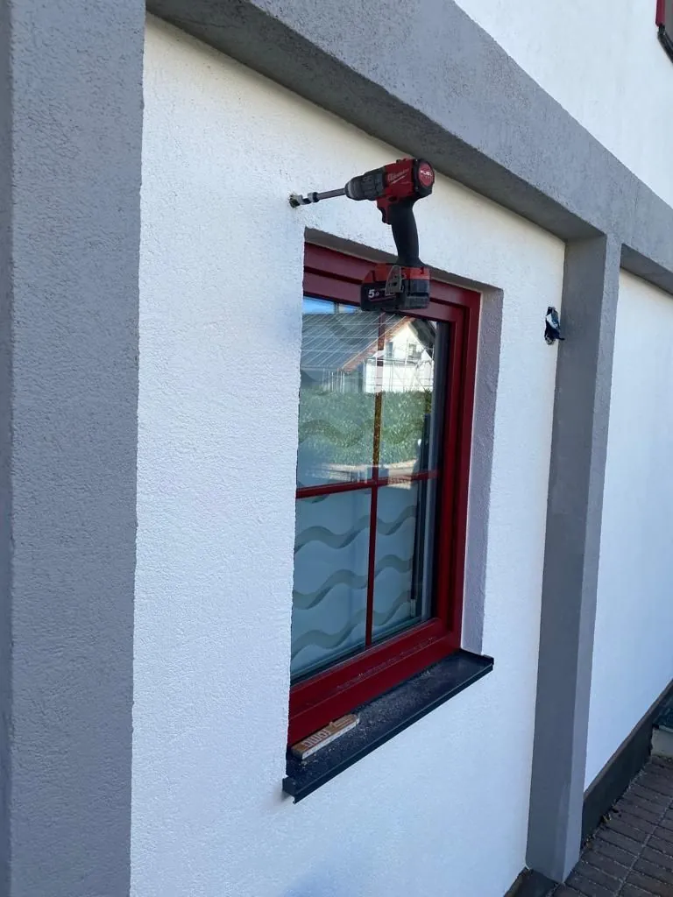
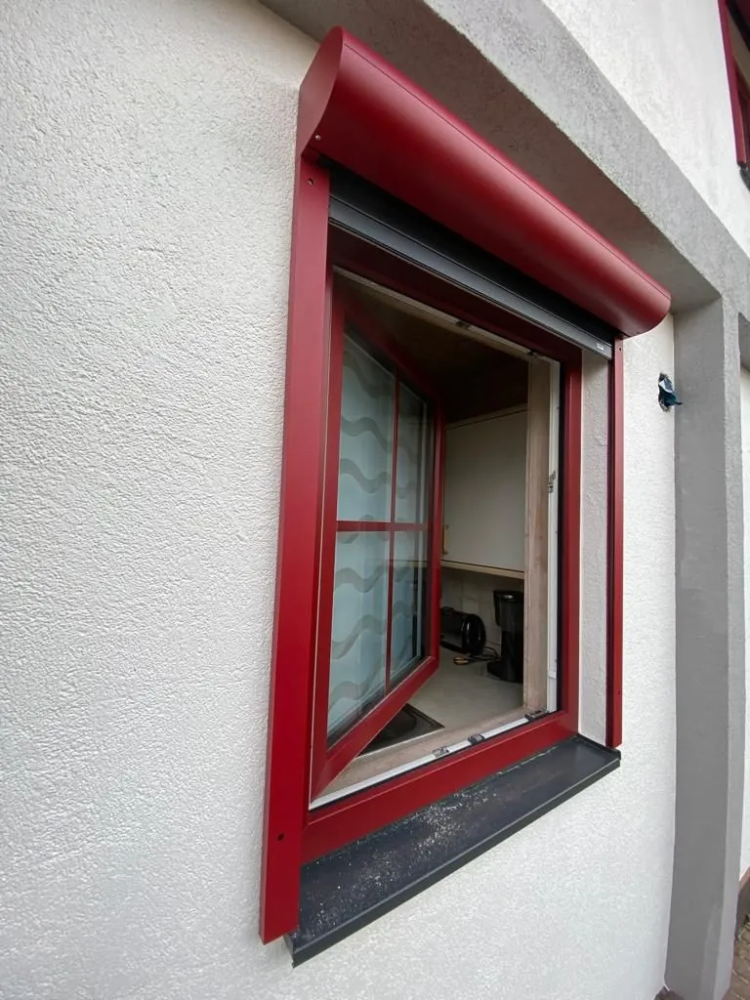

Projekte
Was wir gebaut haben, in Bildern.
Fenstertausch im Bestand, komplette Ausstattung im Neubau, Terrassentüren, Sonnenschutz und Bodenbeläge – Arbeiten aus Bayerbach und dem Landkreis Rottal-Inn.
Vorher und nachher
Glasbausteine raus, Tageslicht rein.
Über dem Hauseingang saßen Glasbausteine aus den Siebzigern. Heute steht dort ein schlankes, dreiteiliges Fensterelement in Anthrazit – mit sauberem Anschluss und neuer Laibung.

 VorherNachher
VorherNachher
Galerie
Ausgeführte Arbeiten.
Fotos aus abgeschlossenen Aufträgen. Zum Vergrößern anklicken.














Alle Bilder stammen aus eigenen Aufträgen. Aus Rücksicht auf unsere Kundinnen und Kunden nennen wir keine Adressen und keine Namen.
Der nächste Schritt
Soll Ihr Haus das nächste sein?
Erzählen Sie uns kurz, was ansteht. Wir kommen zum Aufmaß und rechnen es durch.